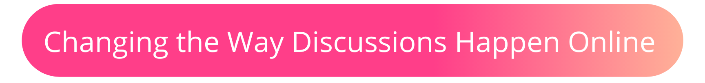

Phone
+1 857 209 6440
Email
rebei@mit.edu
Concord
Share. Discuss. Engage.
Why Concord?
We are currently are living in the age of information, where current events around the world are available to us with the click of a button. There has been a major shift in where people get political information, as many more people turn to digital sources and abandon traditional mass media. There are up to 3.8 billion users on social media today and the way that many of these platforms are designed contribute to rampant political insularity, polarization, and incivility.
Due to the vastness of the internet, there is an abundance of information which can be both frustrating and time consuming to sift through. Seven in ten people have experienced news fatigue and feel worn out from the constant barrage of
contentious stories that are reported daily.
Concord hopes to tackle these problems and change the way people engage with the world around them.
Concord's vision: design an online platform based on the best practices for grassroots mobilization
These practices can be split into three themes:
Education
Awareness and understanding is the backbone of any grassroots campaign. The first step to combatting any problem is gaining knowlege on the subject and making education more acessible.
Discussions
Current social media is an echo chamber, meaning we seek out information that reinforces our existing views. Change does not happen inside an echo chamber. It’s time to have uncomfortable conversations as the first step for progress.
Actions
Once inspired, there is power in numbers. Harness momentum of a movement by funnelling supporter engagement into clear advocacy action, both online and offline.
App Features

Concord's "Media Shelf"
A digital, multi-media spin to a bookshelf
A customizable page for users to share and categorize multi-media resources for their audiences to facilitate information transfer between social circles. For content not able to upload to the app, such as movies and books, these page serves as a decentralized link platform where users are redirected where to purchace or download media by the click of a button.
User Original Content
Share original thoughts on current topics through video, blog posts, infographics, amd art.
A customizable page for users to share their own orignal content to spark dicussions within their audiences.
Users are able to link their resources to encourage their audiences to absorb the material before engaging with the post.
Discussions

Using machine-learning models to encourage meaningful discourse between people
Abuse and harassment stops people from expressing themselves or makes them give up on conversations online entirely.
Concord will use machine-learning models to score the perceived impact a comment might have on a conversation, and discourage and block users on sending personal attacks and toxic comments. Users will see realtime feedback regarding their comments before they engage in discussion. Conversation moderators will be able to track users who engage in harrasment and attacks based on these scores, making it easier to host better conversations.
Comments can also be ranked by users based on relavance to the conversation, uniqueness of the idea, and value it has to the conversation at hand. Comments ranked highly on these metrics by users will be given the most visability.
Easily sort and find information
Concord will also use machine-learning models to allow readers to more easily find relevant information in a conversation, and group ideas by topic.
As promising as machine-learning technology is, models are suscepible to racial, sexist, and abelist biases, among others. This can lead to silencing and censorship of entire populations. Unintened bias require careful planning to avoid therefore equity will be the most important factor on measuring how succesful a developed machine learning model is.
Actions
Facilitating actions for social change
Concord allows users the platform to direct their audiences and increase supporter engagement into clear advocacy action, both online and offline to facilitate social change.
Some of these actions include:
- Money allocation to people and organizations in need
- Link and create petitions for current movements
- Contact political representatives and demand they take action
- Voting registration and dates
- Resources for emotional support
- Upcoming protests
Similar Projects
Click below to explore more of my projects!